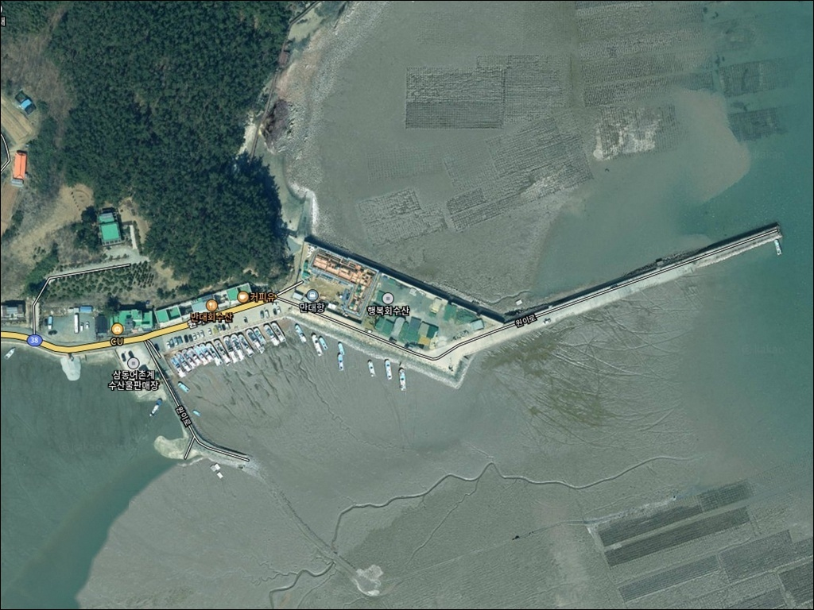
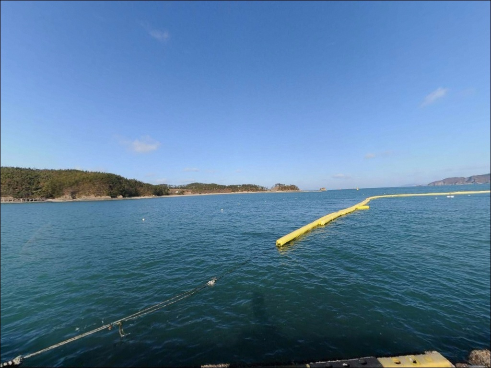
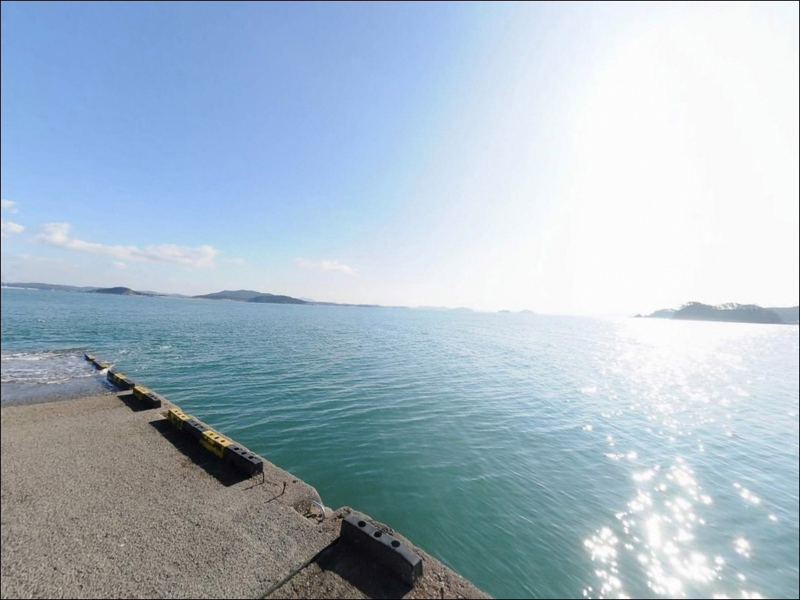
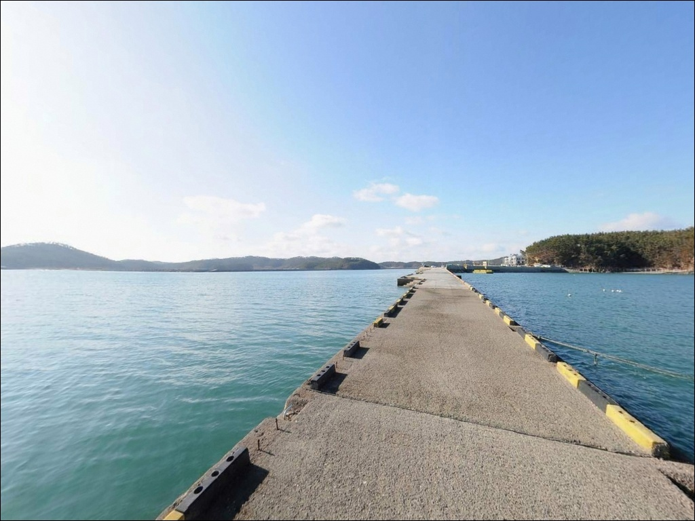
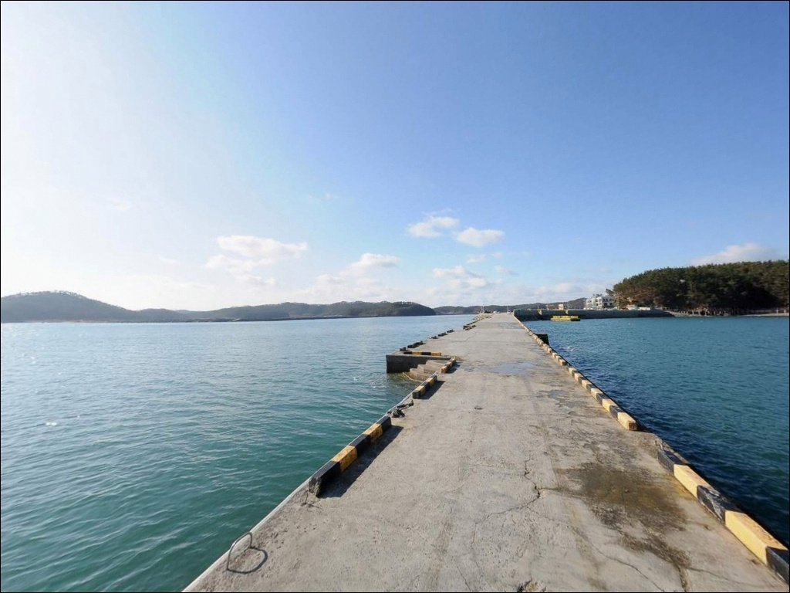
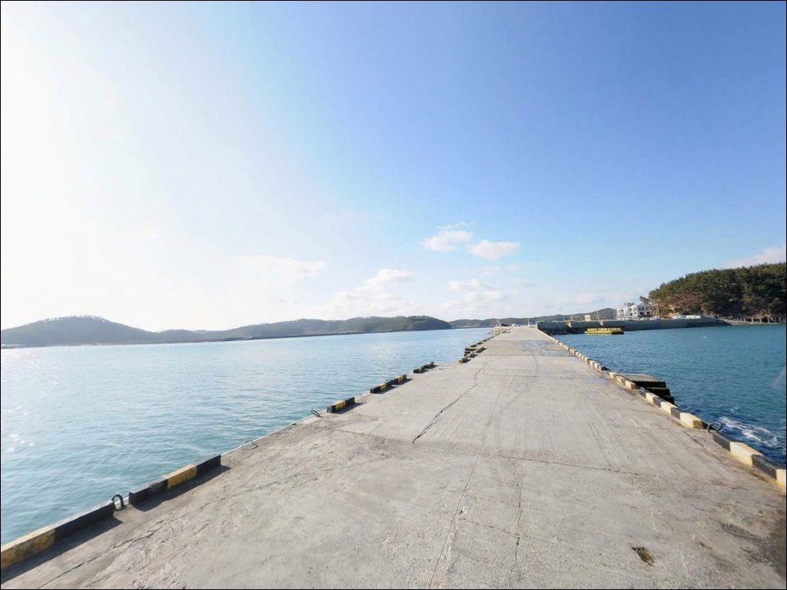
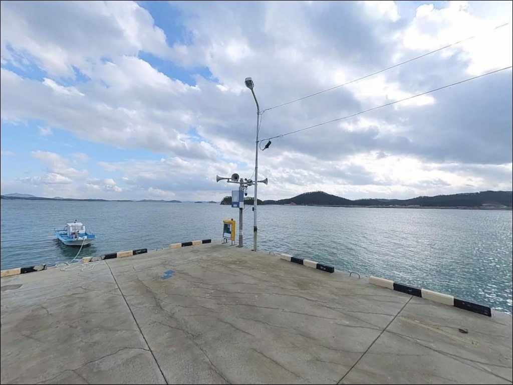
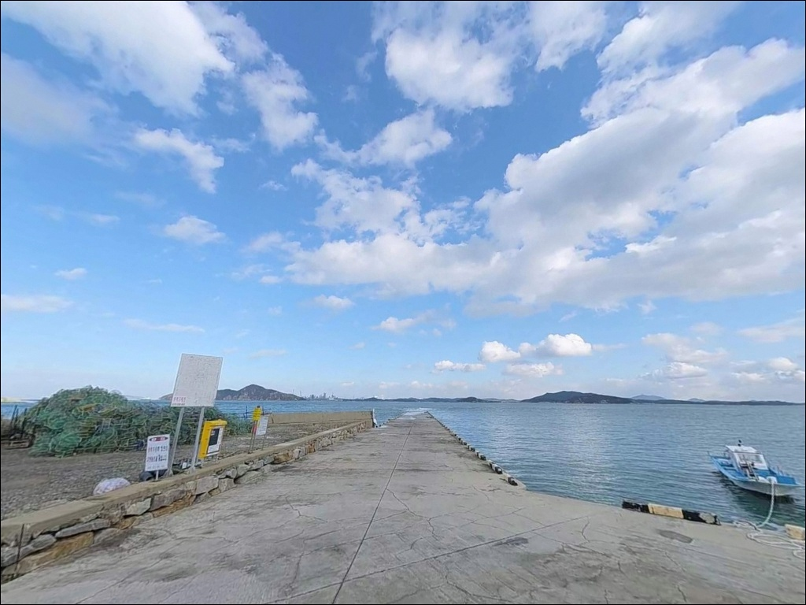
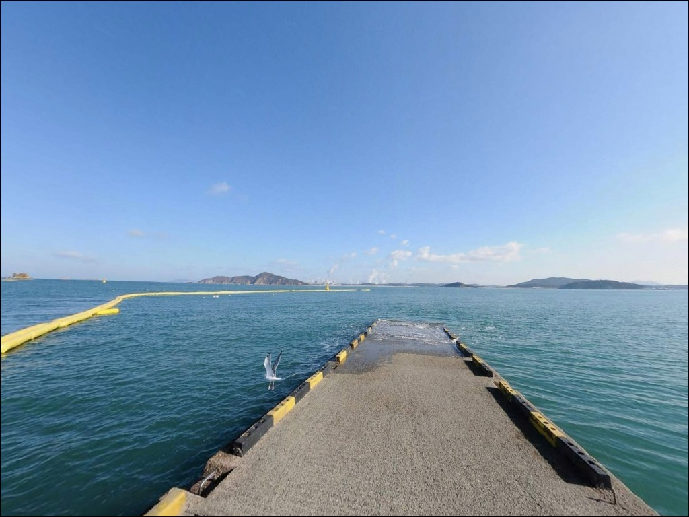

만대항, 충남 태안군 숨은 차박, 낚시 장소
이 페이지에는 광고(제휴 링크 포함)가 있으며, 광고 링크를 통해 구매하면 운영자가 판매 수익 또는 수수료를 받을 수 있습니다. 포인트 사진: 카카오맵 스카이뷰·로드뷰. 이 페이지의 지도·사진 이미지는 카카오맵의 실제 서비스 이미지와 다를 수 있습니다.


포인트 안내
만대항
충남 태안군 이원면 내리 39-21
만대항에서 낚시를 망치는 가장 흔한 실수는
물때를 확인하지 않고 출발하는 것입니다.
서해 특유의 큰 조차로 인해
간조 시에는 방파제 앞 갯벌이 넓게 드러나
어떤 채비를 써도 낚시 자체가 불가능한 구간이 생깁니다.
중들물 이후 만조 타이밍을 맞춰야
이 포인트의 낚시 여건이 살아납니다.
태안반도 북단,
이원면 내리에 자리한 만대항은
가로림만 입구 해안선을 끼고 있는
서해 소규모 지방어항입니다.
삼형제바위와 만대 갯바위가 항구 주변으로
이어지는 구조라
방파제와 갯바위를 함께 노릴 수 있는
복합 포인트 성격을 가지고 있습니다.
이 글은
만대항의 물때 기반 낚시 타이밍,
진입 여건, 포인트별 낚시 운용 방식에 집중합니다.
조황 단정이나 특정 어종 보장은
이 글의 범위에 포함되지 않습니다.

1. 진입 동선과 포인트 접근성
만대항은 이원로를 따라 태안 북단 끝까지
차량으로 접근하는 구조입니다.
간선도로에서 항구까지 연결되는 진입로는
비교적 명확한 편이나,
이원면 내리 방향 마을 도로 일부 구간은
폭이 좁고 구불구불한 구간이 포함될 수 있습니다.
초행 방문이라면 진입로 전구간을 사전에 확인하고 가는 것이 좋습니다.
항구 내부 선착장 주변과
방파제 입구 인근에 공터가 있어
주차 공간은 어느 정도 확보된 편으로 보입니다.
대형 SUV나 캠핑트레일러를 끌고 간다면
회차 공간 여부를 현장에서 먼저 확인하는 것이
좋습니다.
항구 인근에 수산물 직판장과 회센터가
모여 있는 구조라,
주말·성수기에는 관광객 차량이 많아
주차 여건이 달라질 수 있습니다.
낚시 자리와 주차를 함께 잡으려면
평일 이른 시간대 진입이
현실적으로 유리한 조건입니다.

2. 차박 환경과 야간 체류 여건
만대항 항구 주변에는
낚시를 마치고 차에서 하룻밤 머무는
형태의 노지 차박이 이뤄지는 것으로 보입니다.
민가 밀집도가 낮은 어촌 구조라
야간 프라이버시는 상대적으로 양호한 편이며,
항구 중심부 외 외곽 구간은
가로등이 적어 어두울 수 있습니다.
만대항은 솔향기길 1코스
(만대항–꾸지나무골해수욕장) 출발점 역할을
겸하는 위치라,
낮 시간대와 주말에는 보행자와 관광 차량 통행이
상당히 있을 수 있습니다.
조용한 야간 차박을 원한다면
항구 외곽 쪽 공터를 현장에서 탐색하거나
평일 방문을 우선 고려하는 편이 좋습니다.
외항 방향이 서쪽으로 열린 구조라
서풍·북서풍 계절에는 바람 영향이 클 수 있습니다.
늦가을·겨울 야간에는
방풍 준비 없이 차박하기 어려운 조건이 될 수 있어
기상 예보 확인은 출발 당일 아침
한 번 더 확인하는 것이 기본입니다.


3. 주변 편의시설 및 인프라 현황
만대항 인근에는 수산물 직판장과
자연산 활어를 취급하는 회센터가 있습니다.
낚시 후 현지 해산물을 바로 즐기기 좋은
환경이라는 점에서
이 포인트의 실용적인 이점 중 하나입니다.
영업 여부는 방문 전 사전 확인을 권장합니다.
반경 3km 이내에서 편의점이나
마트를 기대하기는 어렵습니다.
이원면 소재지 방향(반경 10km 내)에
농협 하나로마트와 주유소가 있어,
식수, 얼음, 낚시 소품 등은
이곳에서 미리 챙겨두는 것이
현실적인 준비 방식입니다.
완전 자급 체제로 진입한다고 보는 편이 안전합니다.

4. 물때 확인이 방문 성패를 가르는 이유
만대항 방문 전 가장 먼저 챙겨야 할 것은
물때입니다.
서해는 조수간만의 차가 크며,
만대항이 위치한 이원면 해안 역시
"조수간만의 차가 크다"고 알려진 지역입니다.
간조 시에는 방파제 앞 갯벌이 넓게 드러나
어느 자리에서도 낚시 자체가 불가능해집니다.
바다타임에서 이원면 기준 물때를 확인하고
중들물 이후에서 만조 전후 타이밍을 맞춰
출발 시간을 역산하는 것이 기본 전략입니다.
사리 전후에는 조류 흐름이 강해지므로
채비 무게를 올리거나,
정조 타이밍을 기준으로
집중 운용 시간을 짧게 잡는 방식이 유효합니다.
서해 특성상 기상 변화가 빠르고
바람 방향이 수시로 바뀌는 경우가 있습니다.
기상청 파고·풍속 예보는 출발 당일 아침
다시 한번 확인하는 것이
헛걸음을 줄이는 기본 방법입니다.
암초·갯바위 구간이 있는 만큼
여분 채비는 넉넉히 준비하는 편이 좋습니다.

5. 지형 기반 낚시 여건 분석
만대항의 낚시 구역은
방파제, 선착장, 갯바위 세 구간으로
나눠볼 수 있습니다.
방파제 끝단은 수심이 상대적으로 깊어지는
급변 구간으로 보이며,
항 입구를 지나는 조류 흐름이 생기는 구조라
외항 방향이 원투·루어 공략의 주요 구간이 됩니다.
항구 인근 삼형제바위와 만대 갯바위는
솔향기길 해안선과 연결된 구조입니다.
이 갯바위 구간은 광어 포인트로
인근 낚시인들에게 알려진 곳입니다.
갯바위 진입 시에는 조류 흐름과
발판 상태를 반드시 먼저 파악해야 하며,
단독 야간 진입은 피하는 것이 기본입니다.
내항은 저질(뻘·혼합) 구조일 가능성이 높아
찌낚시나 민장대 방식에 어울리는 여건입니다.
물때가 맞는 들물 타이밍에
석축 부근을 공략하는 방식이 이 구간에 맞습니다.
최신 조황은 가기 전에 반드시
검색해 보시기 바랍니다.


6. 만대항에 어울리는 낚시 스타일
원투낚시는 이 포인트에서
가장 기본적인 운용 방식입니다.
방파제 외항 방향으로 청갯지렁이나
오징어 미끼를 달아 던지면
붕장어·노래미·우럭을 기대해 볼 수 있습니다.
붕장어는 야간 원투에서
반응이 올라오는 편이며,
중들물 이후 타이밍을 집중 공략하는 방식이 맞습니다.
루어낚시(지그헤드·웜)는
방파제 외측 테트라포드 구간과
삼형제바위 방향 갯바위에서 운용할 수 있습니다.
갯바위 인근은 광어 공략 포인트로 알려진 구간이며,
바닥층 탐색 방식으로
우럭·노래미도 함께 노려볼 수 있습니다.
밑걸림이 있는 구간이므로
여분 채비는 충분히 준비하는 것이 좋습니다.
가을 시즌에는 에깅도 노려볼 수 있습니다.
에깅이란 갑오징어·주꾸미를 대상으로
에기(인조 미끼)를 활용하는 루어낚시 방식입니다.
서해 이원면 해안에서는
가을 시즌(9~11월) 갑오징어와 주꾸미가
기대되는 어종으로,
이 시기 방문이라면
에깅을 병행 운용해 보는 것이
선택지를 넓히는 방법입니다.

7. 대안 포인트와 플랜 B 동선
만대항 여건이 맞지 않을 때
가장 먼저 이동할 대안은
이원방조제입니다.
같은 이원면 해안선에 위치하며
발판이 편하고 주차 여건이 안정적인 것으로
알려진 포인트입니다.
원투낚시로 도다리·우럭·농어를
기대해 볼 수 있는 구간으로,
만대항 물때가 맞지 않는 상황에서도
이원방조제는 여건이 다를 수 있습니다.
반경 10km 내에서 더 넓은 인프라를 원한다면
학암포항이 대안입니다.
태안 북부권에서 규모가 있는 항구로
편의점·화장실 등 기반 시설이
만대항보다 잘 갖춰진 편입니다.
조황 정보가 없거나 상황이 애매할 때
이동하기 좋은 선택지입니다.
채석포방파제도 태안 권역 대안으로
염두에 둘 수 있습니다.
외항 원투로 우럭·노래미·학꽁치를
노려볼 수 있는 방파제로 알려진 곳이며,
만대항과 다른 방향 조류 여건을 갖춰
물때가 엇갈릴 때 유용한 플랜 B가 됩니다.

물때 맞춰 간다면
만대항의 복합 포인트가 달라 보입니다
방파제 원투낚시와 갯바위 루어낚시를
한 포인트에서 함께 운용하고 싶은 낚시인이라면
만대항의 구조는 잘 맞는 편입니다.
삼형제바위 방향 갯바위까지
도보로 접근 가능하다는 점에서,
한 번의 출조에서
여러 낚시 방식을 탐색해 볼 수 있는
가능성이 있는 곳입니다.
반면 물때 계산 없이 간조 시간대에 도착하거나,
주말 성수기에 주차 공간을 확보하지 못하면
낚시도 차박도 쉽지 않은 상황이 됩니다.
물때 확인, 이원면 소재지 사전 보급,
진입로 위성지도 점검,
이 세 가지를 갖추고 간다면
서해 북부 특유의 한적한 분위기 속에서
충분히 만족스러운 출조가 될 수 있는 곳입니다.
수산물 직판장이 가까워
낚시 후 식사까지 해결하고 싶은 분,
그리고 갯바위를 끼고 조용히 하룻밤
머무는 차박을 원하는 분이라면
만대항은 준비한 만큼 돌아오는
서해 북단의 소박한 포인트입니다.